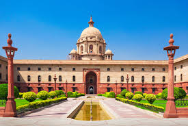

Delhi Tourist Places
Introduction
There are several places to see, visit, and explore in New Delhi. New Delhi is an international metropolis with excellent tourist spots, recreational facilities, and a
history that goes back to antiquity. A remarkable feature of New Delhi is the extent of greenery all over. New Delhi is also a dream city for visitors for items of handicrafts, not only the rich artistic crafts of its own craftsmen
from all over the country. New Delhi offers a multitude of interesting places and attractions to the visitor, so much so that it becomes difficult to decide from where to begin exploring the city.
 Delhi has a long historical past dating back to the pre-historic 6th Century BC era when it was founded as 'Indraprastha', the capital of the Pandavas of the Mahabharata epic. It was earlier known as 'Hastinapur'
or 'Elephant City' according to the ancient Hindu Sanskrit text. It is said that the ancient Indraprast Village existed where the old Fort stands after which it was demolished by the British to make way for constructing New Delhi
towards the late 19th Century.
Delhi has a long historical past dating back to the pre-historic 6th Century BC era when it was founded as 'Indraprastha', the capital of the Pandavas of the Mahabharata epic. It was earlier known as 'Hastinapur'
or 'Elephant City' according to the ancient Hindu Sanskrit text. It is said that the ancient Indraprast Village existed where the old Fort stands after which it was demolished by the British to make way for constructing New Delhi
towards the late 19th Century.

India Gate :
Built as a memorial to commemorate the 70,000 Indian soldiers killed in World War I, India Gate was designed by Sir Edwin Lutyens and completed in 1931. Built from
sandstone, the arch also houses the Eternal Flame, a gesture in memory of the Indian Soldiers who laid their lives in the 1971 war with Pakistan.

Rashtrapati Bhawan :
Rashtrapati Bhawan Formely the Viceregal Lodge, the building is the highlight of Lutyen`s New Delhi and was completed in 1929 at a cost of 12,53,000 pound
steerling. Located in an area of 130 hectares, the palace has 340 rooms.
Jantar Mantar :
At first sight, the Jantar Mantar appears like a gallery of modern art. It is however, an observatory. Sawai Jia Singh II of Jaipur (1699-1743), a keen astronomer and a noble
in the Mughal Court, was dissatisfied by the errors of brass and metal astronomical instruments.
Laxminarayan Temple :
Also called the Birla Mandir, the Laxminarayan Temple was built by the Birla Family in 1938. It is a temple with a large garden and fountains behind it. The temple
attracts thousands of devotees on Janmashtami day, the birthday of Lord Krishna. The temple is a place to visit by most of the tourist coming to New Delhi.